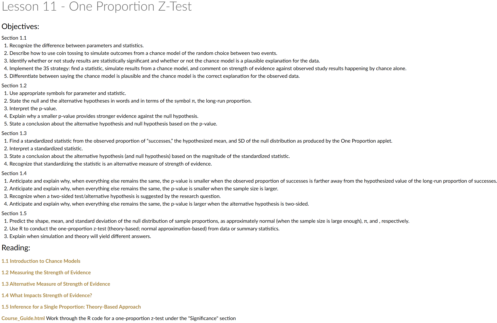

Lesson 11: One Proportion Z-Test
Calendar
Day 1

Day 2

Let’s Talk Milestone 3
Math Writing Template: 20 Points
Academic Articles Worksheet: 10 Points
Updates
Cal


Reese
Little League On-Base Percentage
During my son and his team’s Little League World Series Run, Cal got on base \(18\) out of \(35\) times. I did some research and noticed that across all of Texas East Little Leagues, the average on base percentage was \(40\%\).
Is he really better at this or is this just by chance?
How can we approach this?
Lets rephrase the questions. If the average player gets on base at a \(40\%\) rate, what is the probably that you would observe someone get on base \(18/35=.514\) or more extreme?
How can we approach this?
Lets pretend we redid his season over and over again assuming he was a \(40\%\) hitter. How unlikely are we to see him have a \(.517\) season?
library(tidyverse)
rbinom(n = 35, size = 1, prob = .4)
sum(rbinom(n = 35, size = 1, prob = .4))
sum(rbinom(n = 35, size = 1, prob = .4))/35
n <- 10000
sim_results <-
tibble(trial = 1:n,
successes = replicate(n, sum(rbinom(n = 35, size = 1, prob = 0.4)))
) |>
mutate(proportion = successes / 35)
sim_results
# bins <- sim_results$successes |> range() |> diff()
bins <- sim_results$successes |> unique() |> range() |> diff()
sim_results |>
ggplot(aes(x = proportion)) +
geom_histogram(bins = bins+1) +
geom_vline(xintercept = .514, color = "firebrick", linetype = 5, linewidth = 2)
sim_results |>
mutate(greater = proportion > .514) |>
summarise(prop = sum(greater)/n())Lets formalize this a little bit
Step 1. Hypotheses
- Null hypothesis: \(H_0 : \pi = 0.40\)
- Alternative hypothesis: \(H_A : \pi > 0.40\)
Step 2. Data
- \(n = 35\) plate appearances
- \(x = 18\) successes (on base)
- \(\hat \pi = \tfrac{18}{35} \approx 0.514\)
Step 3. Standard Error
\[ SE = \sqrt{\frac{\pi_0(1-\pi_0)}{n}} = \sqrt{\frac{0.40(0.60)}{35}} \approx 0.083 \]
Step 4. Test Statistic
\[ z = \frac{\hat \pi - p_0}{SE} = \frac{0.514 - 0.40}{0.083} \approx 1.37 \]
Step 5. \(p\)-value
For a one-tailed test:
\[ p = P(Z \geq 1.37) \approx 0.085 \]
1 - pnorm(q = 1.37, mean = 0, sd = 1)[1] 0.08534345Step 6. Conclusion
At \(\alpha = 0.05\), the \(p\)-value is larger than the cutoff.
- We do not have strong enough evidence to conclude this player is truly better than average.
- The result is suggestive (since \(p \approx 0.085\)), but with only 35 plate appearances the evidence is not statistically significant.
- A larger sample would give a clearer answer.
Before you leave
Today:
- Any questions for me?
Upcoming Graded Events
- Project Milestone 3: Due Canvas 22 Sept
- Exploration Exercise 1.5: Due at 0700 on Lesson 13
- 24 September 2025 for Day 1
- 25 September 2025 for Day 2)
- WPR 2: Lesson 22